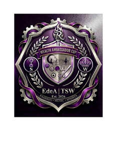

Trade Mark Journal No.2026/010 6 March 2026
UK00004323349 13 January 2026 (9,16,25,35,41)

- Class 9
- Point Of Sale [POS] systems; Graduated rulers; Math coprocessor; Level meters; Time registering apparatus; Science sets for children being teaching apparatus; System on a Chip [SoC]; System on Chip [SOC]; Lap Top computers; Engine hour meters.
- Class 16
- School yearbooks; School writing books; School photographs; School cones, empty.
- Class 25
- Plus fours; Basic upper garment of Korean traditional clothes [Jeogori].
- Class 35
- School fee accounting services; Accounting for third parties.
- Class 41
- Teaching at junior high schools; Gym activity classes; Exercise classes; Teaching at elementary schools; Singing classes; Educating at senior high schools; Conducting of classes; Provision of dance classes; Arranging of classes; Providing courses of instruction at high school level; Conducting fitness classes; Exercise and fitness classes; Providing courses of instruction at college level; Conducting classes in weight reduction; Conducting distance learning instruction at the college level; Education services in the nature of courses at the university level; Conducting distance learning instruction at the graduate level; Conducting classes in exercise; Conducting classes in weight control; Conducting classes in nutrition; Providing courses of instruction at post-graduate level; Conducting distance learning instruction at the university level; Production of course material distributed at vocational lectures; Academic mentoring of school age children; Organisation of examinations to grade level of achievement; Educating at university or colleges; Conducting distance learning instruction at the primary level; Production of course material distributed at professional lectures; Conducting distance learning instruction at the secondary level; Production of course material distributed at vocational courses; Arranging and conducting of day school courses for adults; Conducting physical fitness conditioning classes; Production of course material distributed at professional courses; School services for the teaching of languages; Production of course material distributed at vocational seminars; Production of course material distributed at management lectures; Educational services provided by senior high schools; Production of course material distributed at professional seminars; Pilates instruction; Boarding school education; School services for the teaching of art; Production of course material distributed at management courses; Educating at universities or colleges; Teaching by correspondence courses; Instruction in group exercise; School services for the teaching of construction draughting; Pre-school teaching; Obedience school training for animals; Production of course material distributed at management seminars; Arranging and conducting of classes; Boarding school services; Dance schools; School services; Movement tuition for pre-school children; Yoga instruction; Dance instruction for adults; Teaching in the field of remedial reading; Music tuition by correspondence courses; Producing and conducting exercises for music classes and programmes; Correspondence school services; Boarding schools; Secondary school educational services; Record master production; Conducting of instructional, educational and training courses for young people and adults; Teaching academy services; Presentation of live performances by a musical group; Entertainment services provided at a race track; Motoring school services; Entertainment services provided at a motor racing circuit.
Estilo de Amor Limited